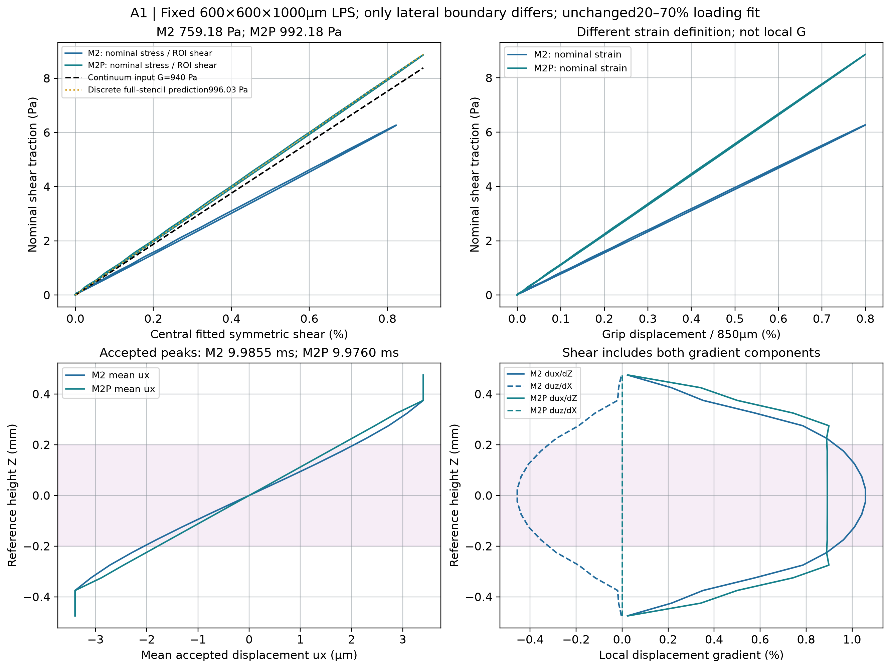
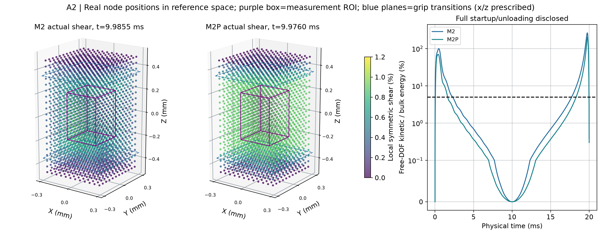
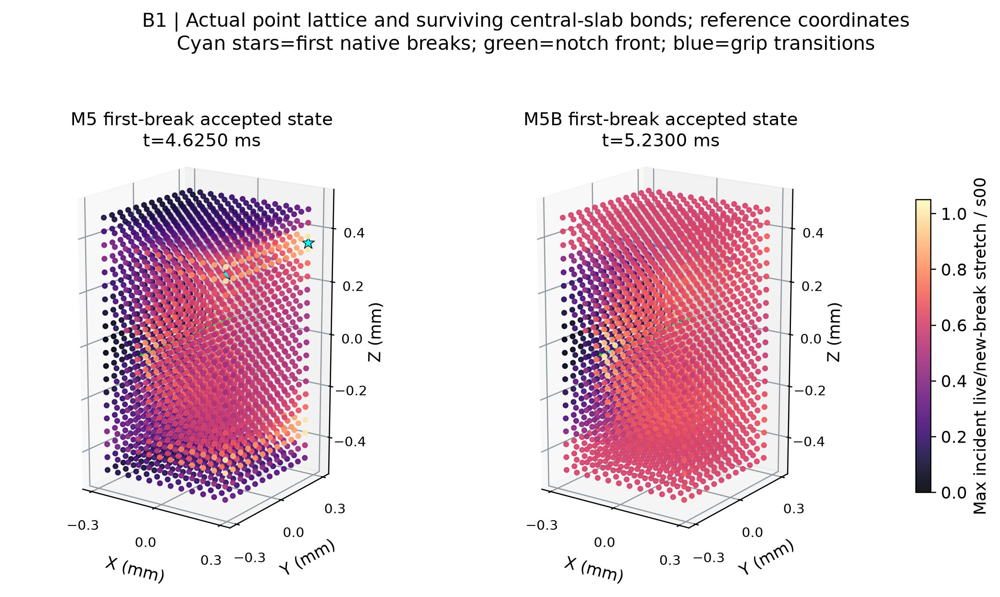
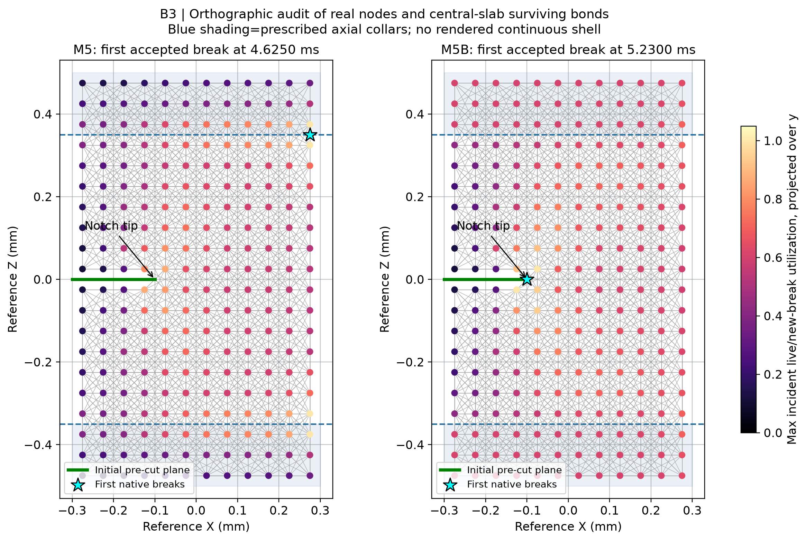
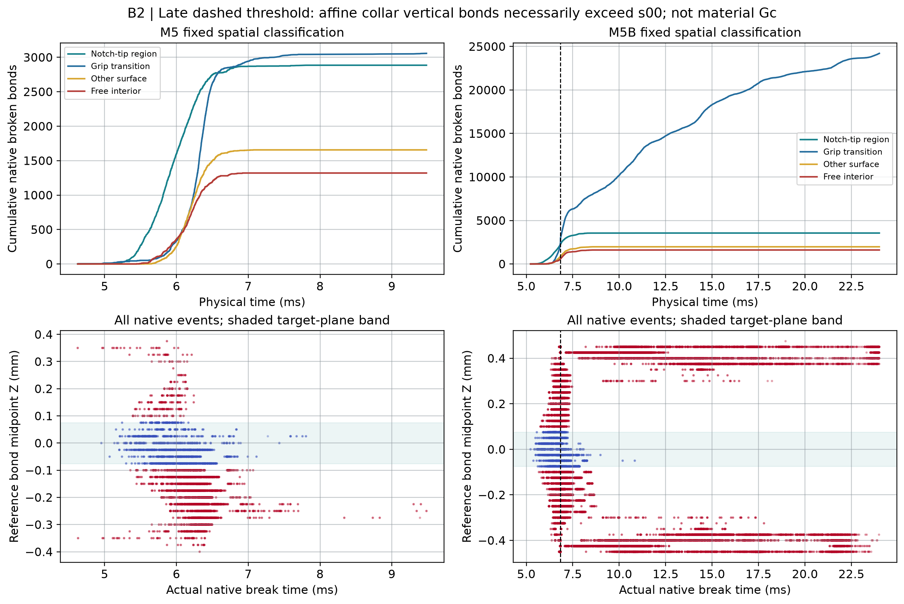
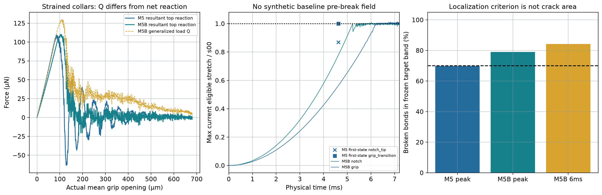
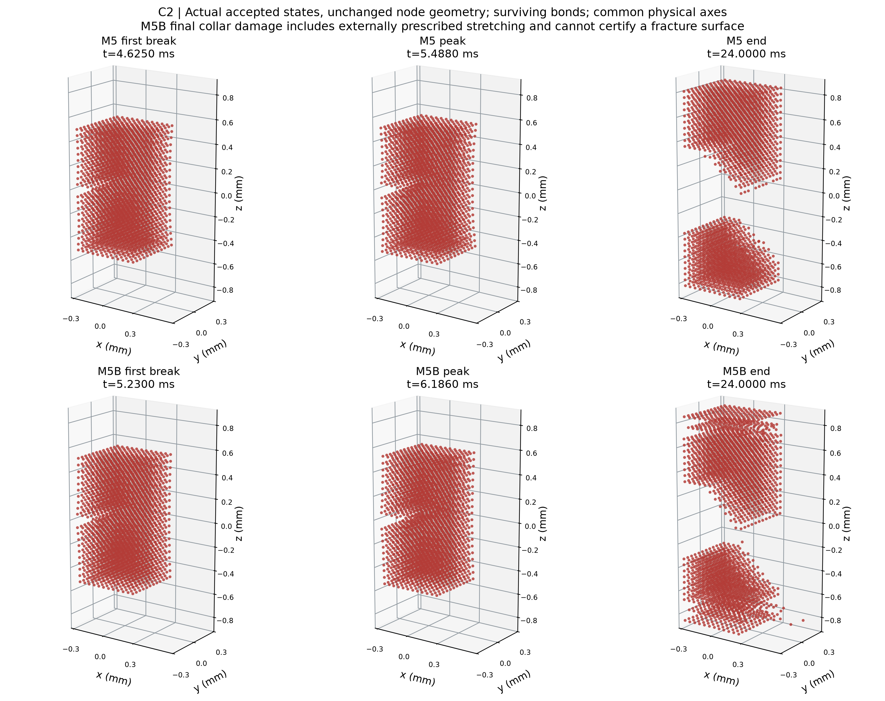
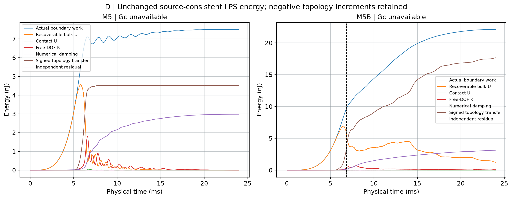
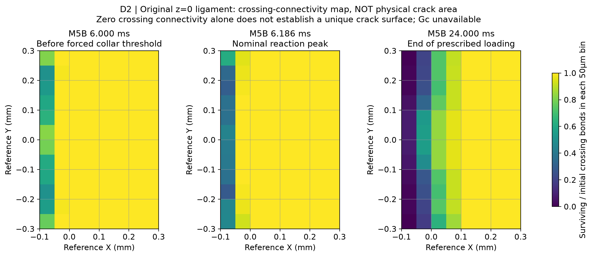

Run 20261011T001536Z · 2个正式算例 · 生产参数不变
M5B后期夹持层被规定拉伸，不能作为完整单裂纹断裂能实验。图中全部为真实接受态或原生事件。
中文完整审查 · 分项状态 · 汇总CSV · 剪切审查 · 断裂诊断 · 性能与存储









前后场没有插值生成；原M5缺少首断前一步坐标。完整逐步历史在服务器，轻量状态与关键图已回收到WSL。
WSL文档diff · 修改前备份 · 写入回执 · 文件SHA